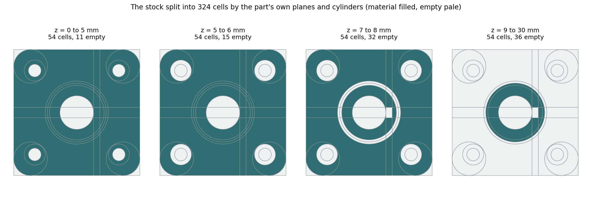

featuretree takes a STEP file, which holds a part's shape but not how it was built, and recovers a list of features that rebuilds it. Until this week it had one way of doing that. We've now tried a second, and this post is what happened: where it's better, and where it's clearly worse.
Why we went looking
Our recogniser works by slicing. It guesses a build direction, cuts the part into cross-sections along it, and traces the outlines it finds. That works well when the outlines are tidy.
We ran it on someone else's example part, a flange coupling exported by BlenderMesh2STEP, a Blender add-on that turns meshes into exact STEP solids. It's a simple part: a plate, a hub, a bore, a key slot, four counterbored holes. We recovered 78% of it.
The cause was three bugs in how we handle circles, plus one awkward detail in the part. The key slot starts exactly at the bore's edge, so the two outlines meet at a single point. Our tracer followed them as one loop that touches itself, and the rebuild failed. With those fixed, the slicer recovers the flange exactly. But it's the third part we've seen fail on touching outlines, so we wanted a method that doesn't trace outlines at all.
The idea
Cell decomposition is an old idea from the feature-recognition literature of the 1990s. It works on volumes instead of outlines:
- Start with the stock. Take the part's bounding box.
- Cut it into cells. Extend every flat face and every cylinder of the part across the whole box. Those surfaces chop the box into cells. Each cell is either entirely material or entirely empty.
- Label each cell. Test a few points inside it against the part.
- Merge empty cells into cuts. Empty cells that sit side by side, and stay empty over the same range of heights, become one cut: a profile and a depth.
- Pick the fewest cuts. Repeatedly take the cut that removes the most empty space not yet removed.

The flange, split into 324 cells, seen from above at four heights. The grey lines are the part's own surfaces extended across the box. Reading left to right you can see the features appear: bolt holes, then their counterbores, then the groove under the hub and the key slot, then the hub standing alone.
The result is a "stock minus cuts" tree. It describes the part the way a machinist would, not necessarily the way its designer built it. A boss is whatever is left after cutting around it.
Two things that went wrong on the way
- A point on the bore's axis was labelled as material. The geometry kernel's inside/outside test gave the wrong answer for a point sitting exactly on a line of symmetry. We now test three off-centre points per cell and take a vote.
- Splitting with every surface at once shattered the part. On a part with holes in several directions, a third of the empty cells weren't simple prisms in any direction, so nothing could merge them. We now split once per build direction, using only the surfaces that make sense for that direction, and let the cuts from all directions compete.
Results
On the flange it recovers the part exactly, as a stock block and 16 cuts, in about 12 seconds. The 16 are the ones you'd list by hand: the bore, the key slot, the groove, four holes, four counterbores, four rounded corners, and the cut around the hub.
Then the eleven parts of NIST's CAD test suite, next to the slicer. A part passes at 99.5% overlap and volume within 0.5%.
| Part | Slicer overlap | Slicer features | Cells overlap | Cells features | Cells time |
|---|---|---|---|---|---|
| CTC-01 | 99.73% ✓ | 54 | 99.73% ✓ | 30 | 128 s |
| CTC-02 | 92.28% | 144 | 22.06% | 162 | 725 s |
| CTC-03 | 94.38% | 64 | 97.73% | 34 | 145 s |
| CTC-04 | 99.03% | 108 | rebuild failed | 93 | 147 s |
| CTC-05 | 98.05% | 57 | 98.06% | 56 | 120 s |
| FTC-06 | 97.72% | 31 | rebuild failed | 44 | 70 s |
| FTC-07 | 96.42% | 29 | 20.01% | 53 | 33 s |
| FTC-08 | 98.75% | 37 | 99.28% | 50 | 212 s |
| FTC-09 | 99.85% ✓ | 80 | 99.98% ✓ | 42 | 104 s |
| FTC-10 | 96.60% | 38 | 99.17% | 80 | 92 s |
| FTC-11 | 100.00% ✓ | 2 | 74.12% | 7 | 4 s |
One caution on reading the table. The slicer's overlap is a lower bound, because its result has to be rotated back onto the input and we only try 24 orientations. The cell method never leaves the input's frame, so its number is direct.
What the table says
- It passes two parts, both with about half the features. CTC-01 comes back as 30 features where the slicer needs 54, and FTC-09 as 42 where the slicer needs 80. Shorter trees are closer to what a person would want to edit.
- It gets closer on four more without passing: CTC-03, FTC-08, FTC-10, and CTC-05 by a hair. CTC-03 is one of the parts the slicer loses to touching outlines.
- It fails badly on three. CTC-02 and FTC-07 are moulded parts with drafted walls, and FTC-11 is a ring with conical faces. The prototype only understands flat faces and cylinders. On FTC-07, 90 of the faces are neither, and almost nothing can be cut.
- Two rebuilds failed in the geometry kernel. On FTC-06 the cut list is produced, but when we replay it, one ordinary round hole makes the kernel return an empty solid. CTC-04 stops with the same error. Unreliable Boolean operations are a known weakness of this kernel, and we haven't worked around it yet.
So it isn't a replacement. The slicer passes three parts and the cell method passes two of those three. The useful reading is that they fail on different parts for different reasons: the slicer on awkward outlines, the cells on surfaces that aren't flat or round.
What's next
- Run both and keep whichever passes, or whichever is shorter when both do.
- Teach the cell method cones and drafted walls, which is most of what it's missing.
- Replay cuts in a way that survives the kernel's Boolean failures.
- Turn "stock minus cuts" back into design terms: a hub as a boss, four holes as one pattern.
Who did what
We chose the direction and pushed on whether the comparison was fair. Claude wrote the prototype, found and fixed the bugs, and ran the measurements.
The code is cell_recognize.py in punkfab/featuretree; paper/figures/cells_corpus.py reruns the table. It's a prototype and not yet wired into the main recogniser. Got a part that should come back as an editable tree? Start a project →